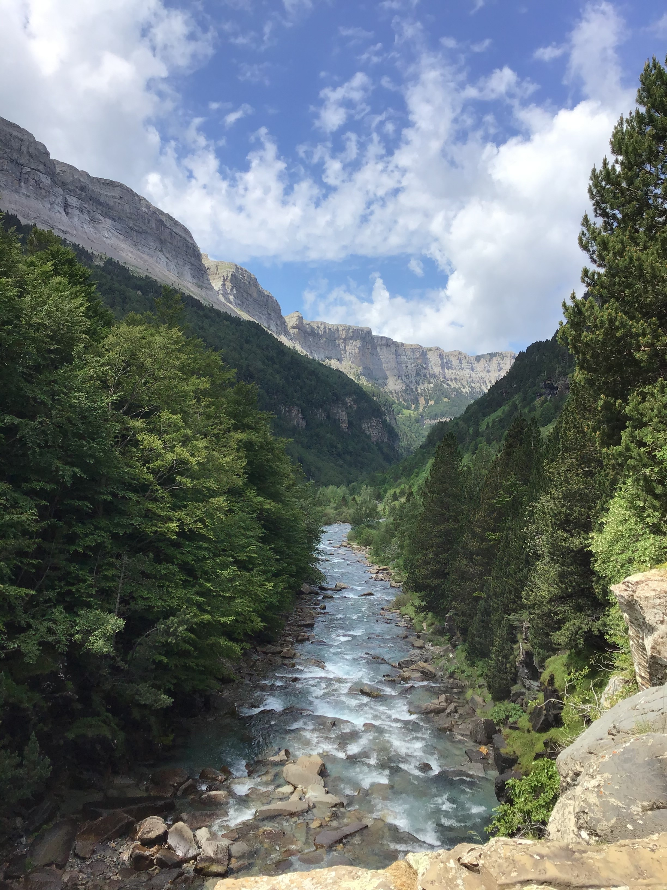

The Lost Valley
ORDESA VALLEY · PYRENEES · SPAIN
Hidden among the towering limestone walls of the Pyrenees, the Valley of Ordesa feels like a world apart. Dense forests, crystal-clear rivers and immense cliffs combine to create one of the most spectacular landscapes in Spain and one of the finest mountain valleys in Europe.
Located within Ordesa y Monte Perdido National Park, this remarkable valley has been shaped over millions of years by glaciers, rivers and the relentless forces of nature. The result is an extraordinary landscape where waterfalls plunge from towering cliffs, ancient forests cover the valley floor and mountain rivers carve their way through the heart of the canyon.
Walking through Ordesa is an experience of constant discovery. Every bend in the trail reveals another dramatic viewpoint, another waterfall or another section of the Arazas River as it winds beneath some of the highest and most impressive peaks in the Pyrenees.

A Hidden World in the Pyrenees
The Valley of Ordesa lies in the Aragonese Pyrenees of northern Spain and forms part of one of the country's most important protected natural areas. Surrounded by towering limestone walls rising hundreds of metres above the valley floor, it possesses a scale and grandeur unlike anywhere else on the Iberian Peninsula.
Although its beauty is widely recognized among hikers and nature enthusiasts, Ordesa still retains a sense of remoteness. Entering the valley feels like stepping into a hidden world where forests, mountains and rivers dominate every direction.
This combination of dramatic scenery and exceptional biodiversity has made Ordesa one of the most treasured landscapes in Spain and a destination admired by mountain lovers throughout Europe.
Carved by Ice and Water
The origins of the valley stretch back millions of years. During the Ice Ages, vast glaciers occupied the region, slowly carving the characteristic U-shaped profile that defines Ordesa today.
As the glaciers retreated, rivers continued the work of erosion, cutting through the rock and shaping the dramatic cliffs that dominate the landscape. The result is a vast natural canyon surrounded by limestone walls, forests and alpine peaks.
Few places demonstrate the combined power of ice and water more clearly. Every waterfall, gorge and cliff face tells part of a geological story that continues to evolve today.
{kind=link}

The Arazas River
Flowing through the centre of the valley, the Arazas River is the lifeblood of Ordesa. Its crystal-clear waters descend from the high mountains, creating one of the most beautiful river landscapes in the Pyrenees.
Along its course, the river forms pools, cascades and waterfalls that have become some of the park's most iconic attractions. During spring and early summer, snowmelt dramatically increases the flow, transforming the valley into a landscape of rushing water and vibrant greenery.
For photographers, the river provides endless opportunities for composition, guiding the eye through the valley while reflecting the surrounding cliffs and forests.
Home to Wildlife
Ordesa is not only famous for its scenery but also for its remarkable wildlife. The national park provides a refuge for many of the species that define the Pyrenean ecosystem.
Among the most iconic inhabitants are the Pyrenean chamois, marmots and birds of prey such as golden eagles and griffon vultures, which often soar above the cliffs using rising thermals. The forests shelter countless smaller species while the high alpine zones support plants and animals specially adapted to harsh mountain conditions.
This rich biodiversity is one of the reasons Ordesa remains one of the most significant conservation areas in southern Europe.
A Paradise for Hikers and Climbers
Few mountain destinations in Spain offer such a variety of outdoor experiences. The Valley of Ordesa is widely regarded as one of the country's premier hiking destinations, attracting visitors from across Europe.
Well-known trails lead to spectacular locations such as the Cola de Caballo waterfall, the Circo de Soaso and numerous high viewpoints overlooking the valley. More demanding routes climb toward the upper plateaus and surrounding summits, rewarding hikers with breathtaking panoramas across the Pyrenees.
The region is also famous for its climbing opportunities and nearby via ferratas, which allow adventurers to experience the vertical landscapes of the Pyrenees from a completely different perspective.
Beneath Monte Perdido
Towering above the national park stands Monte Perdido, one of the most iconic mountains in the Pyrenees. Rising to 3,355 metres, it is among the highest peaks in the entire mountain range and the highest limestone summit in Europe.
Although this story focuses on the valley itself, the presence of Monte Perdido can be felt throughout Ordesa. The mountain dominates the skyline and played a fundamental role in shaping the region's geology and landscapes over countless generations.
Together, Ordesa and Monte Perdido form one of Europe's most remarkable mountain environments and a landscape recognized as a UNESCO World Heritage Site.
The Lost Valley
What makes Ordesa truly unforgettable is not a single waterfall, viewpoint or mountain peak.
It is the way everything comes together.
Towering cliffs shaped by ancient glaciers. Forests stretching beneath immense walls of stone. Crystal-clear rivers carving their way through the valley. Wildlife thriving among untouched landscapes. Trails leading towards some of the greatest mountains in the Pyrenees.
Together, these elements create a place that feels timeless.
For hikers it is an adventure. For photographers it is an endless source of inspiration. And for anyone fortunate enough to walk beside the waters of the Arazas River, it becomes a memory impossible to forget.
Related Stories
Continue exploring the mountains of southern Europe in Cathedrals of Stone, a photographic journey through the dramatic limestone landscapes of the Italian Dolomites.
Photo Notes
Location: Ordesa Valley, Ordesa y Monte Perdido National Park, Spain
Mountain Range: Pyrenees
River: Río Arazas
Nearby Peak: Monte Perdido (3,355 m)
UNESCO World Heritage Site
Category: Landscape Photography
Subject: Ordesa Valley and the Pyrenean Canyon
Photographer: Carles Torres